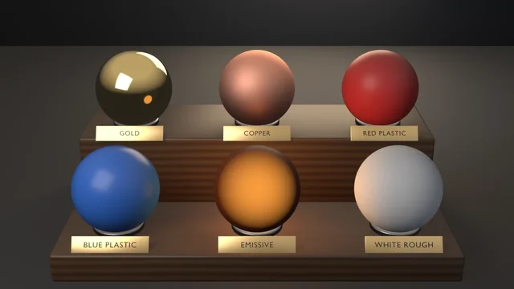

Swatch Grid
Procedural Principled materials — metal and dielectric, the emission pattern, and the cross-version set_specular shim.
examples/light-link-studio/
One key, one hero: a light linked to a receiver collection lights only the hero, proven by two pixel renders in one pass. Linked: 3.6x luminance ratio; unlinked in the same check: the decoy rises 233% while the hero holds at 0.3% drift.
Rendered headless by the example itself. Select it to enlarge.
blender --background --python examples/light-link-studio/light_link_studio.py --
A runnable example that stages one key light linked to a hero sphere beside an identical decoy, renders the studio twice in one pass, and proves the whole light-linking contract in pixels — the feature AI-generated staging code most often misses or misaddresses.
What it witnesses: the light-linking contract and the traps around it.
ld.light_linking is an AttributeError on both versions (verified); the path is obj.light_linking.receiver_collection (ObjectLightLinking, with blocker_collection alongside). Assignment reads back through the API.render.engine swapped: BLENDER_EEVEE on 5.x, BLENDER_EEVEE_NEXT on 4.x) at 3.8x linked ratio on both 4.5.11 EEVEE Next and 5.1.2 EEVEE, matching Cycles within sampling noise. The shipped check still pins Cycles for deterministic tiny-sample CPU renders; luminance gates need view_transform = 'Standard' (AgX compresses the ratios).What each check catches on failure: inverting the link to the decoy collection (exit 6 — hero/decoy ratio collapses to 0.39x), an RNA move of the API onto the Light datablock (exit 3, guarded), a lost assignment read-back (exit 5), a link that doesn't restrict (exit 7, rise below 50%), and a non-surgical restriction (exit 8, hero drift above 5%).
Version witness: ObjectLightLinking API and the measured ratios match on Blender 4.5 LTS and 5.1 (3.7x vs 3.6x linked; rise 238% vs 233% — inside the rise noise described above).
The render is the contract at a glance, on designed subjects: after the check passes on the spheres, the still hides them and stands two identical lathed porcelain chess kings (gilt collar and cross, one shared material) in the hero and decoy collections. The only difference between the kings is the linked key, recoloured amber for the still: the LINKED king glows warm over its placard and the warm floor inlay, the UNLINKED king stays cool grey. The shared fill and rim are pulled down for the still only, because glossy porcelain picks up far more of them than the matte check spheres do. The still's render path gates framing through examples/gallery_framing.py (exit 10) before writing.
# Two-render correctness check (tiny Cycles CPU renders) — the CI check:
blender --background --python light_link_studio.py --
# Falsifier: receiver_collection unset. Must exit non-zero (assignment).
blender --background --python light_link_studio.py -- --skip-link
# Also render the gallery still (Cycles, deterministic samples):
blender --background --python light_link_studio.py -- --output linked.pngPer-script sequential checks. 9 is a valid check code; there is no rule against it.
| Code | Meaning |
|---|---|
| 0 | Success |
| 1 | Uncaught exception (FATAL wrapper) |
| 2 | argparse / usage |
| 3 | Light datablock gained light_linking |
| 4 | Light objects lost light_linking |
| 5 | receiver_collection assignment did not read back (--skip-link lands here) |
| 6 | Linked state: hero dark or hero/decoy ratio below gate |
| 7 | Decoy rise below gate when unlinked |
| 8 | Hero drifted across the unlink |
| 9 | --output produced no file |
| 10 | Framing gate violation on the --output path (gallery_framing) |
The blender-smoke workflow runs the check on Blender 5.2 LTS and 4.5 LTS (5.1 on the weekly cron, the needs-5.1 PR label, or manual dispatch). Smoke does not pass --output or --skip-link.
"""One key, one hero: light linking, proven by pixels — a runnable example. Witnesses the light-linking contract AI-generated staging code most often misses: a light's contribution can be restricted to a receiver collection, and the API is on the light OBJECT (``obj.light_linking``), not the Light datablock — `ld.light_linking` is an AttributeError. The check renders the studio twice in one pass and asserts the whole story in pixels: 1. Linked: the key lights ONLY the hero — the hero reads bright while the identical decoy beside it sits at the fill floor. 2. Unlinked (same check): the decoy's brightness rises materially while the hero's is unchanged within tolerance — the link is surgical, not a dimmer. The engine note, verified rather than assumed: light linking also works on EEVEE — measured with an EEVEE luminance probe (this scene, only ``render.engine`` swapped: ``BLENDER_EEVEE`` on 5.x, ``BLENDER_EEVEE_NEXT`` on 4.x) at 3.8x linked ratio on both 4.5.11 EEVEE Next and 5.1.2 EEVEE, matching Cycles within sampling noise. The shipped check pins Cycles for deterministic tiny-sample CPU renders. The API is stable between Blender 4.5 LTS and 5.1 (ObjectLightLinking with receiver_collection/blocker_collection on both). ``--skip-link`` leaves ``receiver_collection`` unset and still asserts the hero collection. That is the falsifier (``--same-axis`` in export-preset-axis). By default it runs the two-render correctness check (no gallery still) — the CI smoke check. Pass --output to also render a still: blender --background --python light_link_studio.py -- # check only blender --background --python light_link_studio.py -- --skip-link # must fail blender --background --python light_link_studio.py -- --output l.png # + render """ import bpy, bmesh, sys, os, math, argparse, tempfile, shutil from mathutils import Matrix # Shared Layer 1 framing measurement (render path only) — see # gallery_framing.py for the __file__-relative import shim this relies on. sys.path.insert(0, os.path.join(os.path.dirname(os.path.abspath(__file__)), os.pardir)) import gallery_framing # noqa: E402 HERO_RGB = (0.85, 0.30, 0.08) # hazard orange DECOY_RGB = (0.30, 0.34, 0.40) # cold steel KEY_ENERGY = 560.0 FILL_ENERGY = 26.0 SPHERE_Z = 1.18 # center: sphere rests on the pedestal cap PXW, PXH = 64, 36 RATIO_MIN = 3.0 # hero/decoy luminance ratio, linked HERO_LUMA_MIN = 0.25 # hero must be well-lit, linked RISE_MIN = 0.5 # decoy luminance rise when unlinked (relative) HERO_DRIFT_MAX = 0.05 # hero brightness change across the two renders def sphere(name, rgb, x, coll): me = bpy.data.meshes.new(name) bm = bmesh.new() try: bmesh.ops.create_uvsphere(bm, u_segments=32, v_segments=16, radius=0.5) bm.to_mesh(me) finally: bm.free() for p in me.polygons: p.use_smooth = True mat = bpy.data.materials.new(name + "M") mat.use_nodes = True b = mat.node_tree.nodes["Principled BSDF"] b.inputs["Base Color"].default_value = (*rgb, 1.0) b.inputs["Roughness"].default_value = 0.55 me.materials.append(mat) ob = bpy.data.objects.new(name, me) ob.location = (x, 0.0, SPHERE_Z) coll.objects.link(ob) return ob def _principled(name, rgb, rough, metallic=0.0, emit=None, estr=0.0): mat = bpy.data.materials.new(name) mat.use_nodes = True b = mat.node_tree.nodes["Principled BSDF"] b.inputs["Base Color"].default_value = (*rgb, 1.0) b.inputs["Roughness"].default_value = rough b.inputs["Metallic"].default_value = metallic if emit is not None: sock = b.inputs.get("Emission Color") or b.inputs["Emission"] sock.default_value = (*emit, 1.0) b.inputs["Emission Strength"].default_value = estr return mat def _bevel(ob, width, segments=2): mod = ob.modifiers.new("Bev", 'BEVEL') mod.width = width mod.segments = segments mod.limit_method = 'ANGLE' def _cyl(sc, name, r1, r2, depth, loc, mat, bevel=0.0): me = bpy.data.meshes.new(name) bm = bmesh.new() try: bmesh.ops.create_cone(bm, cap_ends=True, cap_tris=False, segments=48, radius1=r1, radius2=r2, depth=depth) bm.to_mesh(me) finally: bm.free() me.update() for p in me.polygons: # smooth the wall, keep the caps flat p.use_smooth = abs(p.normal.z) < 0.5 me.materials.append(mat) ob = bpy.data.objects.new(name, me) ob.location = loc sc.collection.objects.link(ob) if bevel: _bevel(ob, bevel) return ob def _box(sc, name, dims, loc, mat, bevel=0.0, parent=None): me = bpy.data.meshes.new(name) bm = bmesh.new() try: bmesh.ops.create_cube(bm, size=1.0) bmesh.ops.transform(bm, matrix=Matrix.Diagonal((*dims, 1.0)), verts=bm.verts) bm.to_mesh(me) finally: bm.free() me.materials.append(mat) ob = bpy.data.objects.new(name, me) ob.location = loc if parent is not None: ob.parent = parent sc.collection.objects.link(ob) if bevel: _bevel(ob, bevel, segments=3) return ob def pedestal(sc, x, dark, metal): """A designed specimen plinth: turned foot, dark polymer body with a flat front for the placard, machined collar band, round cap.""" _cyl(sc, "PedFoot", 0.58, 0.54, 0.09, (x, 0.0, 0.045), metal, 0.02) _box(sc, "PedBody", (0.74, 0.54, 0.50), (x, 0.0, 0.34), dark, 0.05) _box(sc, "PedCollar", (0.80, 0.60, 0.05), (x, 0.0, 0.615), metal, 0.015) _cyl(sc, "PedCap", 0.42, 0.42, 0.06, (x, 0.0, 0.67), metal, 0.02) def floor_inlay(sc, x, mat): """Thin disc flush with the floor: the linked light's footprint. The hero's is emissive warm; the decoy's is dark metal — a footprint that never lights, and therefore cannot pollute the decoy's fill floor.""" _cyl(sc, "Inlay", 0.74, 0.74, 0.014, (x, 0.0, 0.007), mat) def add_light(sc, name, energy, loc, color, size, aim=None, rot=None): ld = bpy.data.lights.new(name, 'AREA') ld.energy = energy ld.size = size ld.color = color ob = bpy.data.objects.new(name, ld) ob.location = loc if aim is not None: con = ob.constraints.new('TRACK_TO') con.target = aim con.track_axis = 'TRACK_NEGATIVE_Z' con.up_axis = 'UP_Y' else: ob.rotation_euler = tuple(math.radians(a) for a in rot) sc.collection.objects.link(ob) return ob def build_studio(sc): """Hero and decoy as specimens on plinths, plus a low fill that lights both. The plinths and inlays are dressing only: the witness is still two identical spheres where one key reaches only the hero.""" hero_c = bpy.data.collections.new("HeroColl") decoy_c = bpy.data.collections.new("DecoyColl") hero = sphere("Hero", HERO_RGB, -1.2, hero_c) decoy = sphere("Decoy", DECOY_RGB, 1.2, decoy_c) sc.collection.children.link(hero_c) sc.collection.children.link(decoy_c) ped_dark = _principled("PedDark", (0.05, 0.052, 0.06), 0.5, metallic=0.15) ped_metal = _principled("PedMetal", (0.16, 0.17, 0.20), 0.3, metallic=0.9) pedestal(sc, -1.2, ped_dark, ped_metal) pedestal(sc, 1.2, ped_dark, ped_metal) inlay_warm = _principled("InlayWarm", (0.02, 0.018, 0.016), 0.6, emit=(0.85, 0.36, 0.09), estr=1.1) inlay_dark = _principled("InlayDark", (0.07, 0.075, 0.085), 0.35, metallic=0.85) floor_inlay(sc, -1.2, inlay_warm) floor_inlay(sc, 1.2, inlay_dark) floor_me = bpy.data.meshes.new("Floor") bm = bmesh.new() try: bmesh.ops.create_grid(bm, x_segments=1, y_segments=1, size=30.0) bm.to_mesh(floor_me) finally: bm.free() fmat = bpy.data.materials.new("Studio") fmat.use_nodes = True fb = fmat.node_tree.nodes["Principled BSDF"] fb.inputs["Base Color"].default_value = (0.03, 0.032, 0.037, 1.0) fb.inputs["Roughness"].default_value = 0.7 floor_me.materials.append(fmat) floor = bpy.data.objects.new("Floor", floor_me) sc.collection.objects.link(floor) wall = bpy.data.objects.new("Wall", floor_me.copy()) wall.location = (0.0, 9.0, 0.0) wall.rotation_euler = (math.radians(90), 0.0, 0.0) sc.collection.objects.link(wall) world = bpy.data.worlds.new("World") world.use_nodes = True world.node_tree.nodes["Background"].inputs["Color"].default_value = (0.02, 0.021, 0.025, 1.0) sc.world = world # every subject light is aimed at the aim empty, so no cone grazes the # floor/wall seam into a bright band (docs/VISUAL-STYLE.md) aim = bpy.data.objects.new("Aim", None) aim.location = (0.0, 0.0, 0.4) sc.collection.objects.link(aim) key = add_light(sc, "Key", KEY_ENERGY, (-3.0, -3.0, 4.0), (1.0, 0.96, 0.9), size=4.5, aim=aim) add_light(sc, "Fill", FILL_ENERGY, (3.2, -1.6, 1.8), (0.75, 0.85, 1.0), size=4.5, aim=aim) add_light(sc, "Rim", 200.0, (0.5, 4.5, 4.0), (0.6, 0.78, 1.0), size=2.5, aim=aim) # the signature warm wedge: between the subjects and the wall, raking the # wall low so a soft warm pool sits behind the hero just above the seam add_light(sc, "Wedge", 500.0, (-2.0, 7.0, 2.8), (1.0, 0.76, 0.5), size=5.0, rot=(-49, 0, 166)) cam = bpy.data.cameras.new("Cam") cam.lens = 50.0 cam_ob = bpy.data.objects.new("Cam", cam) cam_ob.location = (0.0, -6.2, 2.3) # the camera frames the raised specimens, the lights keep their own aim — # re-aiming the lights would move the measured luminance. The steeper # down-angle also keeps the decoy's fill-floor luminance at its measured # baseline — a flatter camera samples a brighter point on the decoy. cam_aim = bpy.data.objects.new("CamAim", None) cam_aim.location = (0.0, 0.0, 0.8) sc.collection.objects.link(cam_aim) con = cam_ob.constraints.new('TRACK_TO') con.target = cam_aim con.track_axis = 'TRACK_NEGATIVE_Z' con.up_axis = 'UP_Y' sc.collection.objects.link(cam_ob) sc.camera = cam_ob return hero, decoy, hero_c, key def setup_render(sc, w, h, samples): # Cycles for deterministic tiny CPU samples; EEVEE honors linking too # (measured with an authoring probe on both supported versions), but # its sampling is not deterministic enough for a luminance gate sc.render.engine = 'CYCLES' sc.cycles.samples = samples sc.cycles.use_denoising = False sc.render.resolution_x = w sc.render.resolution_y = h sc.render.resolution_percentage = 100 sc.render.image_settings.file_format = 'PNG' # Standard keeps luminance ratios meaningful (AgX would compress them) sc.view_settings.view_transform = 'Standard' def luma_at(img, fx, fy): w, h = img.size x, y = int(fx * w), int(fy * h) i = (y * w + x) * 4 px = img.pixels return 0.299 * px[i] + 0.587 * px[i + 1] + 0.114 * px[i + 2] def render_lumas(sc, tmp, name, hero, decoy): from bpy_extras.object_utils import world_to_camera_view path = os.path.join(tmp, name) sc.render.filepath = path bpy.ops.render.render(write_still=True) img = bpy.data.images.load(path) # sample AT each sphere's projected center (framing-independent), taking # the max over a small disc to stay off edges out = [] for ob in (hero, decoy): ndc = world_to_camera_view(sc, sc.camera, ob.matrix_world.translation) best = 0.0 for dy in (-2, 0, 2): for dx in (-2, 0, 2): best = max(best, luma_at(img, ndc.x + dx / PXW, ndc.y + dy / PXH)) out.append(best) bpy.data.images.remove(img) return out[0], out[1] def check(sc, key, hero_c, hero, decoy, skip_link=False): # contract 0 (RNA guard): the API is on the light OBJECT ld = key.data if hasattr(ld, "light_linking"): print("ERROR: Light datablock gained light_linking — the API moved; " "this example pins the Object-level path", file=sys.stderr) return 3 if not hasattr(key, "light_linking"): print("ERROR: light objects lost light_linking", file=sys.stderr) return 4 # contract 1 (assignment round-trip through the API itself) key.light_linking.receiver_collection = None if skip_link else hero_c if key.light_linking.receiver_collection != hero_c: print("ERROR: receiver_collection assignment did not read back", file=sys.stderr) return 5 setup_render(sc, PXW, PXH, 8) tmp = tempfile.mkdtemp(prefix="light_link_") try: hero_a, decoy_a = render_lumas(sc, tmp, "linked.png", hero, decoy) key.light_linking.receiver_collection = None hero_b, decoy_b = render_lumas(sc, tmp, "unlinked.png", hero, decoy) key.light_linking.receiver_collection = hero_c # restore for the still finally: shutil.rmtree(tmp, ignore_errors=True) # contract 2 (linked): the hero is lit, the decoy is not ratio_a = hero_a / max(decoy_a, 1e-6) if hero_a < HERO_LUMA_MIN or ratio_a < RATIO_MIN: print(f"ERROR: linked state wrong — hero {hero_a:.3f} (min " f"{HERO_LUMA_MIN}), hero/decoy {ratio_a:.2f}x (min {RATIO_MIN}x)", file=sys.stderr) return 6 # contract 3 (unlinked): the decoy rises materially, the hero holds rise = (decoy_b - decoy_a) / max(decoy_a, 1e-6) hero_drift = abs(hero_b - hero_a) / max(hero_a, 1e-6) if rise < RISE_MIN: print(f"ERROR: decoy rose only {rise:.1%} when unlinked (min " f"{RISE_MIN:.0%}) — the key was never restricted", file=sys.stderr) return 7 if hero_drift > HERO_DRIFT_MAX: print(f"ERROR: hero drifted {hero_drift:.1%} across the unlink " f"(max {HERO_DRIFT_MAX:.0%}) — the link is not surgical", file=sys.stderr) return 8 print(f"linked: hero={hero_a:.3f} decoy={decoy_a:.3f} " f"ratio={ratio_a:.1f}x (min {RATIO_MIN}x)") print(f"unlinked: hero={hero_b:.3f} decoy={decoy_b:.3f} " f"rise={rise:.0%} (min {RISE_MIN:.0%}) " f"hero_drift={hero_drift:.1%} (max {HERO_DRIFT_MAX:.0%})") return 0 def placard(sc, text, x, plate_m, stand_m, text_m): """Museum nameplate: a beveled plate on two standoffs bolted to the plinth front, tilted back to face the raised camera, text on its face.""" root = bpy.data.objects.new("Placard", None) root.location = (x, -0.325, 0.34) root.rotation_euler = (math.radians(71), 0.0, 0.0) sc.collection.objects.link(root) _box(sc, "Plate", (0.92, 0.22, 0.024), (0.0, 0.0, 0.0), plate_m, 0.012, parent=root) for sx in (-0.30, 0.30): _cyl(sc, "Standoff", 0.016, 0.016, 0.055, (sx, 0.0, -0.038), stand_m).parent = root cu = bpy.data.curves.new("PlacardText", 'FONT') cu.body = text cu.align_x = 'CENTER' cu.align_y = 'CENTER' cu.size = 0.15 cu.extrude = 0.004 ob = bpy.data.objects.new("PlacardText", cu) ob.location = (0.0, 0.0, 0.0165) ob.parent = root cu.materials.append(text_m) sc.collection.objects.link(ob) # Render-only chess king, lathed from an (r, z) profile standing on z=0. # Faces between KING_BAND z-limits take the gilt material (index 1). KING_PROFILE = [ (0.0, 0.0), (0.34, 0.0), (0.355, 0.025), (0.345, 0.065), (0.29, 0.085), (0.30, 0.115), (0.26, 0.135), (0.21, 0.19), (0.165, 0.31), (0.14, 0.45), (0.145, 0.55), (0.22, 0.585), (0.235, 0.615), (0.175, 0.64), (0.165, 0.67), (0.20, 0.79), (0.25, 0.89), (0.258, 0.915), (0.215, 0.94), (0.155, 0.99), (0.075, 1.02), (0.0, 1.03), ] KING_BAND = (0.57, 0.65) KING_SEGS = 48 def chess_king(sc, name, x, z0, coll, body_m, gilt_m): me = bpy.data.meshes.new(name) bm = bmesh.new() try: rings = [] for r, z in KING_PROFILE: if r == 0.0: rings.append([bm.verts.new((0.0, 0.0, z))]) else: rings.append([bm.verts.new((r * math.cos(2 * math.pi * s / KING_SEGS), r * math.sin(2 * math.pi * s / KING_SEGS), z)) for s in range(KING_SEGS)]) for a, b in zip(rings, rings[1:]): zmid = 0.5 * (a[0].co.z + b[0].co.z) idx = 1 if KING_BAND[0] <= zmid <= KING_BAND[1] else 0 for s in range(KING_SEGS): t = (s + 1) % KING_SEGS if len(a) == 1: f = bm.faces.new((a[0], b[t], b[s])) elif len(b) == 1: f = bm.faces.new((a[s], a[t], b[0])) else: f = bm.faces.new((a[s], a[t], b[t], b[s])) f.smooth = True f.material_index = idx # gilt cross finial: an upright and a crossbar for dims, cz in (((0.055, 0.055, 0.24), 1.13), ((0.19, 0.075, 0.055), 1.17)): res = bmesh.ops.create_cube(bm, size=1.0) for v in res["verts"]: v.co = (v.co.x * dims[0], v.co.y * dims[1], v.co.z * dims[2] + cz) for f in {f for v in res["verts"] for f in v.link_faces}: f.material_index = 1 bmesh.ops.recalc_face_normals(bm, faces=bm.faces) bm.to_mesh(me) finally: bm.free() me.set_sharp_from_angle(angle=math.radians(45.0)) me.materials.append(body_m) me.materials.append(gilt_m) ob = bpy.data.objects.new(name, me) ob.location = (x, 0.0, z0) coll.objects.link(ob) return ob def render_still(sc, path, key, hero, decoy): """The gallery still stages the contract on designed subjects: the checked spheres are hidden and two identical porcelain chess kings stand in their collections. The kings share one material, so the only difference between them is the linked key — recoloured amber for the still (the check ran first, on the untouched scene).""" porcelain = _principled("Porcelain", (0.66, 0.64, 0.60), 0.22) gilt = _principled("Gilt", (0.78, 0.56, 0.24), 0.28, metallic=1.0) kings = [] for src in (hero, decoy): src.hide_render = True coll = src.users_collection[0] kings.append(chess_king(sc, "King" + src.name, src.location.x, 0.70, coll, porcelain, gilt)) key.data.color = (1.0, 0.48, 0.16) key.data.energy = KEY_ENERGY * 1.2 # the unlinked king must sit near the fill floor as the check measured it # on the matte decoy sphere; porcelain reflects far more of the shared # fill and rim, so both are pulled down for the still only sc.objects["Fill"].data.energy = FILL_ENERGY * 0.45 sc.objects["Rim"].data.energy = 70.0 plate_m = _principled("PlateBlack", (0.03, 0.032, 0.038), 0.6) stand_m = _principled("StandMetal", (0.16, 0.17, 0.20), 0.3, metallic=0.9) # faint self-glow: the UNLINKED placard must read even in the decoy's dark text_m = _principled("PlacardText", (0.42, 0.44, 0.48), 0.6, metallic=0.2, emit=(0.35, 0.37, 0.42), estr=0.6) placard(sc, "LINKED", -1.2, plate_m, stand_m, text_m) placard(sc, "UNLINKED", 1.2, plate_m, stand_m, text_m) # the gallery still is the linked state, on Cycles for the same # deterministic sampling as the check sc.render.engine = 'CYCLES' sc.cycles.samples = 64 sc.cycles.use_denoising = True sc.render.resolution_x = 1280 sc.render.resolution_y = 720 sc.render.resolution_percentage = 100 sc.render.image_settings.file_format = 'PNG' sc.render.filepath = path sc.view_settings.view_transform = 'Standard' bpy.context.view_layer.update() # Layer 1 framing gate before the beauty render (exit 10 on violation) stage = [o for o in sc.objects if o.name.startswith(("Floor", "Wall", "Inlay"))] placards = [o for o in sc.objects if o.name.startswith(("Plate", "PlacardText"))] peds = [o for o in sc.objects if o.name.startswith("Ped")] fcode = gallery_framing.check_framing(sc, sc.camera, hero=kings + peds, elements=kings + peds + placards, stage=stage) if fcode: return fcode bpy.ops.render.render(write_still=True) return 0 if os.path.exists(path) and os.path.getsize(path) > 0 else 9 def main(): argv = sys.argv[sys.argv.index("--") + 1:] if "--" in sys.argv else [] p = argparse.ArgumentParser() p.add_argument("--output", default=None, help="optional: render a still PNG here") p.add_argument("--skip-link", action="store_true", help="falsifier: leave receiver_collection unset, still assert hero_c") args = p.parse_args(argv) bpy.ops.wm.read_factory_settings(use_empty=True) sc = bpy.context.scene hero, decoy, hero_c, key = build_studio(sc) code = check(sc, key, hero_c, hero, decoy, skip_link=args.skip_link) if code: return code if args.output: rcode = render_still(sc, os.path.abspath(args.output), key, hero, decoy) if rcode: if rcode == 9: print("ERROR: render produced no file", file=sys.stderr) return rcode print(f"rendered still {args.output}") print("light-link-studio OK") return 0 if __name__ == "__main__": try: sys.exit(main()) except Exception as e: import traceback; traceback.print_exc(); print(f"FATAL: {e}", file=sys.stderr); sys.exit(1)